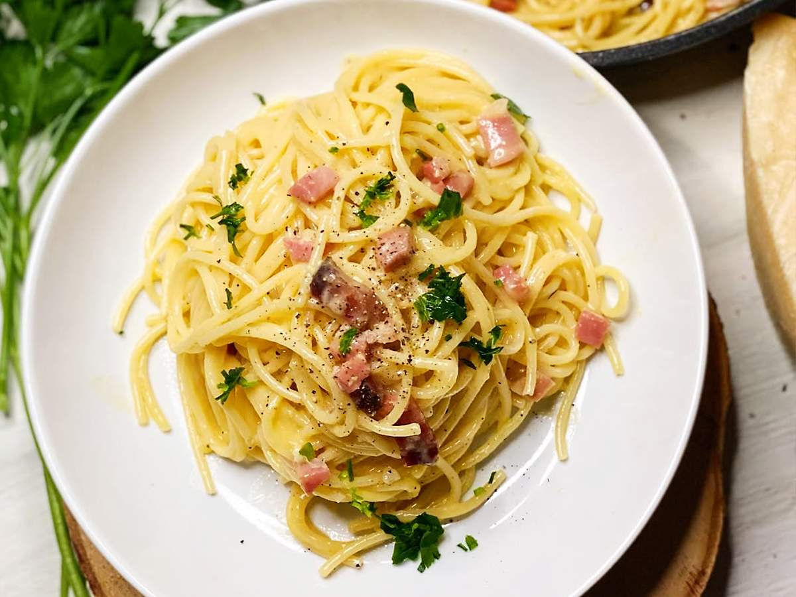

Pratos Principais

Carbonara
Tradicional massa italiana com molho cremoso e pancetta.

Espaguete
Espaguete artesanal com molho de tomate fresco e ervas.

Lasanha
Camadas de massa, molho bolonhesa e queijo gratinado.
Valores
- Autenticidade - respeitamos as tradições da nossa culinária familiar.
- Qualidade - usamos sempre ingredientes frescos e de alta procedência.
- Paixão pela gastronomia - cozinhamos com amor e dedicação.
Visão
Espalharmos a história da família Racanelli e o amor presente em nossa comida pelo mundo todo, através das nossas futuras filiais.